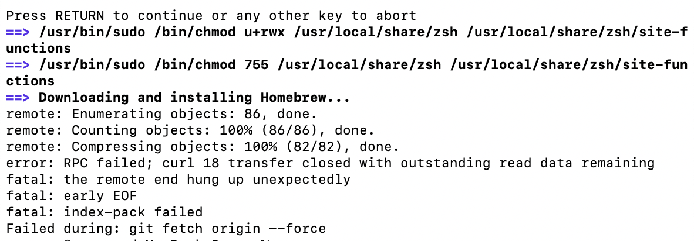
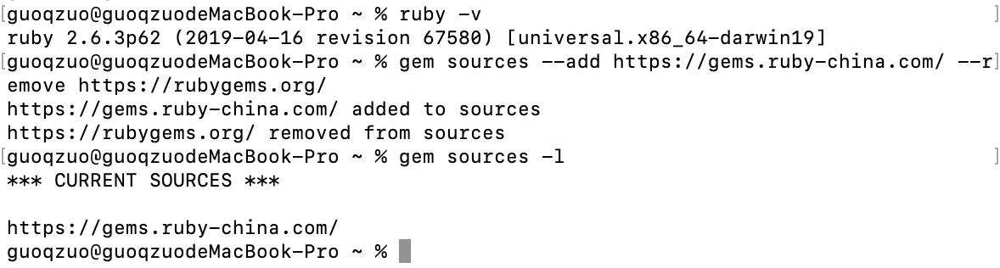

mac安装brew下载慢，安装异常，切换成ruby-china源
这篇文章发布于 2020/10/31，归类于 计算机基础与开发工具
标签：
brew下载慢，brew切换ruby源，brew安装异常
mac下使用brew可以很方便的安装svn、nginx等常用的工具。
什么是brew [bruː]，它的全称是 Homebrew，The Missing Package Manager for macOS (or Linux)。它可以安装macOS或linux下没有的包(Package)。
一般使用ruby来安装
ruby -e "$(curl -fsSL https://raw.githubusercontent.com/Homebrew/install/master/install)"mac自带ruby，但如果直接安装，他会比较慢，直接卡死，安装不上。

这就需要使用国内的 ruby 源了。类似与npm与cnpm的概念，这里使用ruby-china的源，具体参考：RubyGems - Ruby China
# 设置ruby源
gem sources --add https://gems.ruby-china.com/ --remove https://rubygems.org/
# 查看ruby源
gem sources -l
这样，再重新运行安装brew的命令就可以安装成功了，虽然也慢，但至少可以安装成功。安装包就快了。
参考：